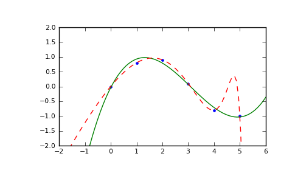

numpy.ma.polyfit¶
- numpy.ma.polyfit(x, y, deg, rcond=None, full=False, w=None, cov=False)¶
Least squares polynomial fit.
Fit a polynomial p(x) = p[0] * x**deg + ... + p[deg] of degree deg to points (x, y). Returns a vector of coefficients p that minimises the squared error.
Parameters : x : array_like, shape (M,)
x-coordinates of the M sample points (x[i], y[i]).
y : array_like, shape (M,) or (M, K)
y-coordinates of the sample points. Several data sets of sample points sharing the same x-coordinates can be fitted at once by passing in a 2D-array that contains one dataset per column.
deg : int
Degree of the fitting polynomial
rcond : float, optional
Relative condition number of the fit. Singular values smaller than this relative to the largest singular value will be ignored. The default value is len(x)*eps, where eps is the relative precision of the float type, about 2e-16 in most cases.
full : bool, optional
Switch determining nature of return value. When it is False (the default) just the coefficients are returned, when True diagnostic information from the singular value decomposition is also returned.
w : array_like, shape (M,), optional
weights to apply to the y-coordinates of the sample points.
cov : bool, optional
Return the estimate and the covariance matrix of the estimate If full is True, then cov is not returned.
Returns : p : ndarray, shape (M,) or (M, K)
Polynomial coefficients, highest power first. If y was 2-D, the coefficients for k-th data set are in p[:,k].
residuals, rank, singular_values, rcond : present only if full = True
Residuals of the least-squares fit, the effective rank of the scaled Vandermonde coefficient matrix, its singular values, and the specified value of rcond. For more details, see linalg.lstsq.
V : ndaray, shape (M,M) or (M,M,K)
The covariance matrix of the polynomial coefficient estimates. The diagonal of this matrix are the variance estimates for each coefficient. If y is a 2-d array, then the covariance matrix for the k-th data set are in V[:,:,k]
Warns : RankWarning :
The rank of the coefficient matrix in the least-squares fit is deficient. The warning is only raised if full = False.
The warnings can be turned off by
>>> import warnings >>> warnings.simplefilter('ignore', np.RankWarning)
See also
- polyval
- Computes polynomial values.
- linalg.lstsq
- Computes a least-squares fit.
- scipy.interpolate.UnivariateSpline
- Computes spline fits.
Notes
Any masked values in x is propagated in y, and vice-versa.
References
[R49] Wikipedia, “Curve fitting”, http://en.wikipedia.org/wiki/Curve_fitting [R50] Wikipedia, “Polynomial interpolation”, http://en.wikipedia.org/wiki/Polynomial_interpolation Examples
>>> x = np.array([0.0, 1.0, 2.0, 3.0, 4.0, 5.0]) >>> y = np.array([0.0, 0.8, 0.9, 0.1, -0.8, -1.0]) >>> z = np.polyfit(x, y, 3) >>> z array([ 0.08703704, -0.81349206, 1.69312169, -0.03968254])
It is convenient to use poly1d objects for dealing with polynomials:
>>> p = np.poly1d(z) >>> p(0.5) 0.6143849206349179 >>> p(3.5) -0.34732142857143039 >>> p(10) 22.579365079365115
High-order polynomials may oscillate wildly:
>>> p30 = np.poly1d(np.polyfit(x, y, 30)) /... RankWarning: Polyfit may be poorly conditioned... >>> p30(4) -0.80000000000000204 >>> p30(5) -0.99999999999999445 >>> p30(4.5) -0.10547061179440398
Illustration:
>>> import matplotlib.pyplot as plt >>> xp = np.linspace(-2, 6, 100) >>> plt.plot(x, y, '.', xp, p(xp), '-', xp, p30(xp), '--') [<matplotlib.lines.Line2D object at 0x...>, <matplotlib.lines.Line2D object at 0x...>, <matplotlib.lines.Line2D object at 0x...>] >>> plt.ylim(-2,2) (-2, 2) >>> plt.show()
(Source code, png, pdf)


{kind=link}